Meral Arik is a co-founder of Hello Chava, a technology start up that uses A.I. to power client relationships over text messaging. Her popular Instagram @my.startuplife is the first of its kind, documenting the day-to-day experiences of a young woman building a tech startup in Silicon Valley.
Meral is also founder of DOER Society, a fast growing community for entrepreneurial women. She built this active community on the firm belief that real, shared experiences are the best way to improve & scale mentorship.
Contact Information:
Email: meralarikk@gmail.com
Instagram
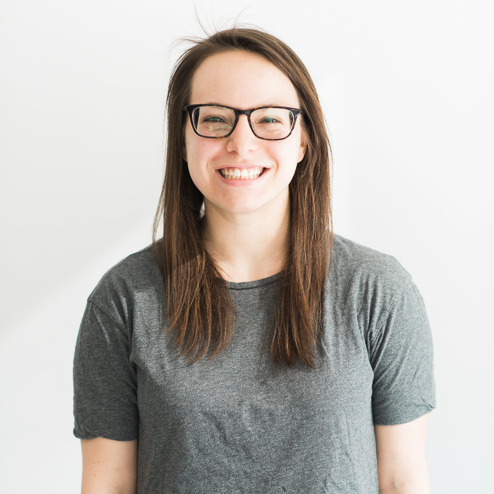
"Software Engineer at Flatiron Health. My team writes tools that help cancer doctors more effectively treat their patients."
Contact Information:
Email: allison.candido@gmail.com
Linkedin
At 17 years old, Emily Koehne is the Founder and CEO of STEMilyK.org, a website dedicated to increasing the amount of girls interested in STEM. She accomplishes this by meeting with some of the top women in STEM and interviewing them about their unique careers. She posts the videos on her website so all girls, no matter socioeconomic background, can have access to these interviews. Emily's interviewees include seven CEOs, three Ivy League professors, and numerous other executives of Fortune 500 companies.
She has already been highlighted by many news outlets including Huffington Post, Girls' Life Magazine, and Amy Poehler's Smart Girls. Emily is passionate about gender equality, youth entrepreneurship, and inspiring young people around the world.
Contact Information:
Email: emily@stemilyk.org
Linkedin
Website: stemilyk.org
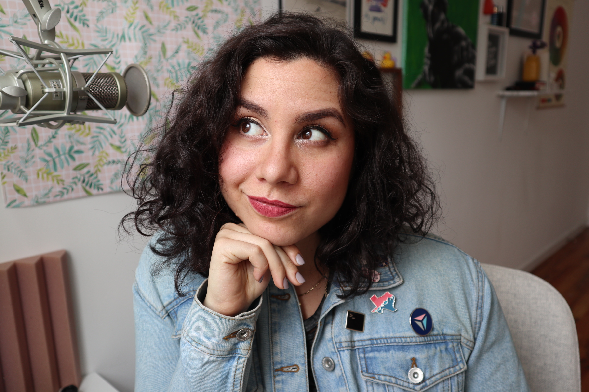
"I work on the engineering team to ensure clean and consistent UI/UX of the BDG brands which currently include Bustle, Romper, Elite Daily, and The Zoe Report, as well as internal tools."
Una Kravets is an international public speaker, technical writer, and the Director of Product Design at Bustle Digital Group. She has written for various online publications such as A List Apart, 24 Ways, Smashing Magazine, and SitePoint, and started both the DC and Austin Sass Meetup groups. Una also co-hosts the Toolsday developer podcast and has a Youtube video series called The Markup Artist, which features videos about about life, fashion and tech. Una now resides in Brooklyn, NY, where you can find her playing ukulele, or doing hand-lettering when she's not experimenting with web technology.
Contact Information:
Blog: unakravets.comInstagram
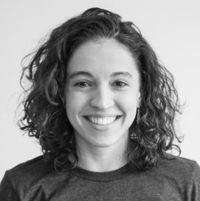
“I am a Senior Data Insights Engineer at Flatiron Health. At Flatiron we use technology and organized data to accelerate cancer research and improve patient outcomes. This is the mission, and I believe we live by it: Flatiron: Solve Problems that Matter
My day to day is a mix of:
• Distilling ideas from client conversations
• Identifying where our data may be able to deliver value against the challenging status quo
• Writing data pipelines (sql, python, pandas) and developing beta products (python, javascript) to test those hypotheses with an eye toward failing fast
• Collaborating with software engineering and product management teams on both higher level strategic and product-level decisions”
Contact Information:
Email: aldagpontes@gmail.com
Linkedin
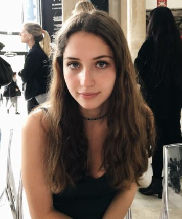
"I am a sophomore at Marist College, majoring in computer science with a double minor in math and fashion merchandising. I hope one day to develop software to help artists and designers."
Contact Information:
Email: mariammolloy@gmail.com
Linkedin Instagram
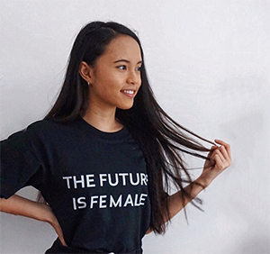
"I am a self-taught developer. My journey into tech started from a hobby of creating websites for fun when I was 8 years old, now I continue to bring my ideas to life by playing around with pixels on the internet."
Contact Information:
Email: pauline@paulinenarvas.com
Linkedin InstagramTwitter
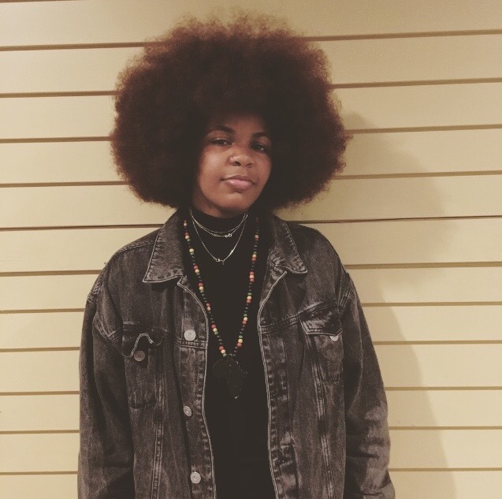
"I'm Brooklyn native beginning my senior at Smith College, double majoring in computer science and studio art. I'm very passionate about the intersection between art and technology. Through my studies I explore political and societal topics by creating art work that challenges oppression. I focus on telling stories through digital art and technology. Growing up I've always wanted to make a difference in the world. What I've learned over years is that you must first start with yourself. With that in mind, I plan to start my own production company that gives a voice to the unheard through multi-media. In addition to my production company I plan to start a non-profit organization, a community based art and technology center that equips low-income and minority families with tools, opportunities and resources to challenge the lack of Black and Latinx people in technology. I hope to change the world one laugh, tear, and step at a time. :)"
Contact Information:
Email: asimeon@smith.edu
Facebook
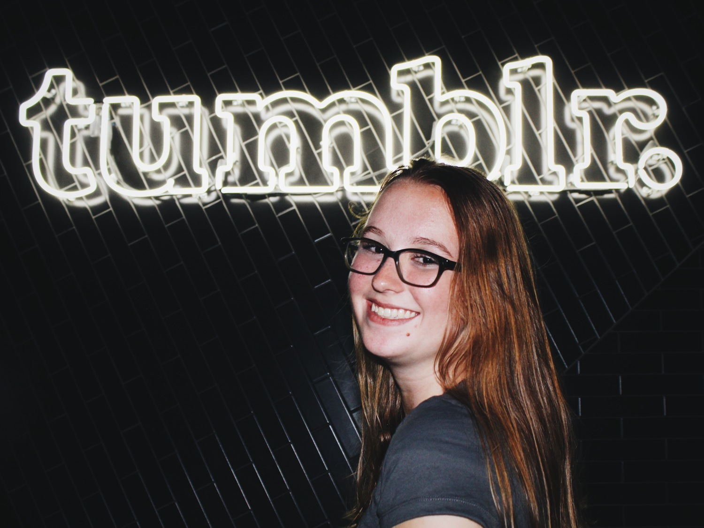
“Hi! I'm a junior at Cornell studying electrical and computer engineering. I was a GWC SIP participant in 2014, and since then I've interned at Oath/AOL, IAC, Girls Who Code, and, most recently, Qualcomm. I've co-founded three hackathon organizations: def hacks(), for high schoolers by high schoolers; FwdCode, a college hackathon for social good; and ProgramHers, a hackathon organization to immerse females in tech. At school, I am the founder and president of our chapter of the Alpha Omega Epsilon engineering sorority and a Vice President for Women in Computing at Cornell. Additionally, I am a fellow of Rewriting the Code, a member of the #BUILTBYGIRLS community, and a tech/lifestyle blogger. When I have free time, I love reading, watching new Marvel movies, and trying new foods.”Contact Information:
Email: caitlinstanton44@gmail.com
Blog: caitlin.site
Social Media: @codercaitlin on all social media platforms
Ashley is a software engineer at LendingClub in San Francisco, CA, where she writes software to help with deployment, cloud orchestration, and automating all the things. She graduated from UC Berkeley with a degree in Electrical Engineering and Computer Science, while being a flyer on the cheer team there. She loves sleeping, eating (especially things that contain a lot of sugar in them), makeup, and fashion! She runs an instagram page @ashley_chloe where she embraces her love of girly things outside of coding and tech.
Contact Information:Instagram
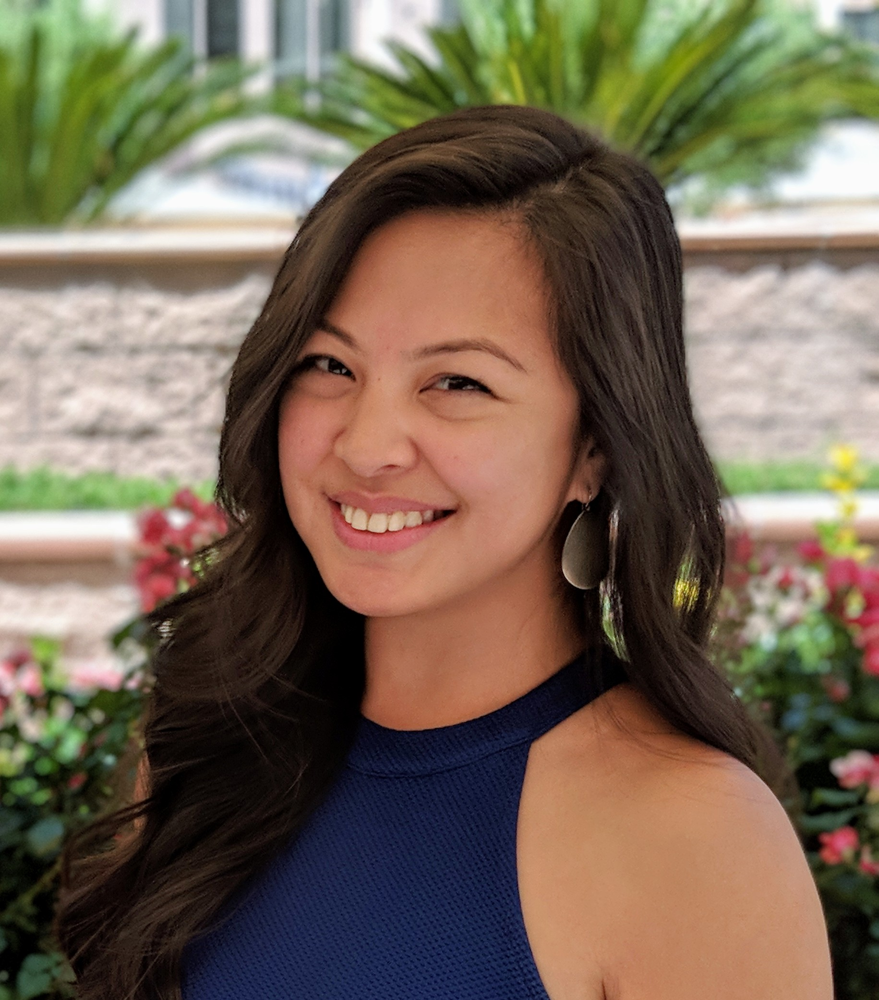
"I’m Adrienne. I'm Filipina, married, no kids, and currently enjoying life and achieving life goals as a Software Engineer in Las Vegas.
As far as my background, I’m originally from California although I’ve lived in other states and even the Philippines for a few years. I went to UNLV (Go Rebels!) and graduated a semester early with a degree in Management Information Systems while also working full-time. Since then, I've worked at several jobs all over Las Vegas, in various industries like Higher Education, Healthcare, and Consumer Services. Each position I have held has helped me grow in one of three important ways: technically, by challenging me with interesting business problems to solve, emotionally, by becoming more confident in myself, and socially, by sharing my gained experiences and knowledge with others in the dev community in Las Vegas.
I am currently a Software Engineer for a FinTech company called DebtTrader. We are the nation's leading debt marketplace and focus on trading debt responsibly and consumer financial safety. My daily duties involve everything from setting up new pipelines for continuous integration and continuous deployment of our platform, outlining user flows and process flows, creating new components, squashing bugs, or re-designing an older part of our platform. I am truly a full-stack engineer in every sense! I hope to inspire other women to see that femininity and technical excellence can co-exist. :)"
Contact Information:
Email: kumusta@adrienne.io
Linkedin Instagram
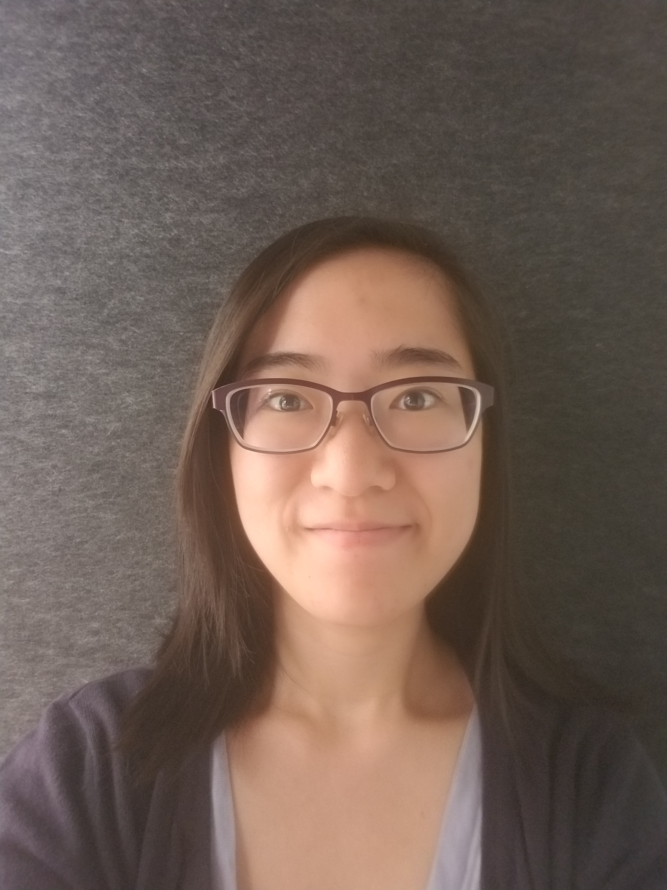
“I am born and raised in New York, and attended Stuyvesant High School, where I fell in love with Computer Science the required programming class in sophomore year. I graduated from Stony Brook University with a degree in CS, although I began my undergraduate studies in Computer Engineering. After college I started my first job with a company called Yodle. I was fortunate enough to be able to work with a lot of
amazing and smart people, and learned a lot about tech, and professionalism, and had a ton of fun to boot! After 2 amazing years, I joined my current company, Flatiron Health, and am working hard to help keep community oncology practices solvent and stable, so that they can focus on providing quality care to their patients.”
Contact Information:
Email: vannawong11@gmail.com
Linkedin
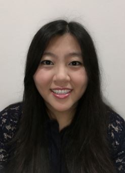
“Hi! I'm Jenny! I am passionate about user driven products, and love being in environments where I am surrounded by people who are just as passionate as I am in building a product that will positively impact its users. Driven by this passion, I have had the opportunity to explore a variety of roles, from Software Engineering at Salesforce and Microsoft, to Technical Program Management at Hulu. Through these experiences, I have learned how to drive a program from a technical standpoint, while also keeping business requirements and original scope in check. On a deeper level, I have gained hands on programming experience at an industry level with front end technologies, cross platform mobile frameworks, the lifecycle of software deployment, and more. I have learned more from these experiences than I ever thought possible, and am so grateful for these opportunities. Now, I am looking forward to my next adventure, where I can dive even deeper in learning about my passion. tl;dr: I have experience in program management, UI design/development, web apps, client facing, and full stack development.”
Contact Information:Linkedin
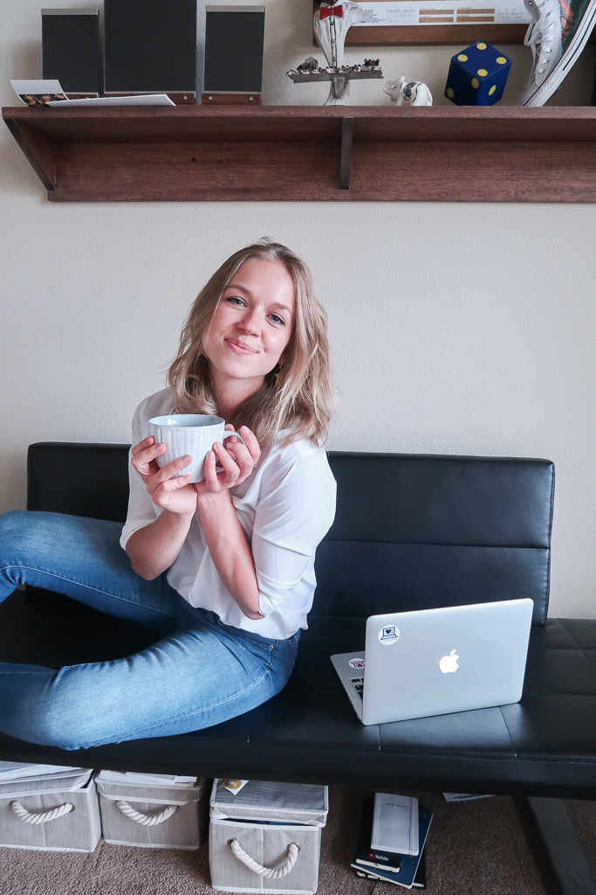
Masha is the founder of Coding Blonde, a blog dedicated to empowering women in technology and breaking stereotypes. She is originally from Russia, but she has lived and studied in 5 countries by now. Her background is in Marketing and Market Research and she has worked at a few startups before joining Google, where she worked as part of the YouTube team helping creators with their content and business development strategies. Right now she works at the University of Colorado Boulder as a Global Entrepreneur in Residence while working on Coding Blonde. Masha’s mission is to introduce women to the different areas and dimensions of tech and help them find the right resources to learn more about it and to start their career in the industry.
Contact Information:
Email: masha@codingblonde.com
Linkedin
Website: codingblonde.comYoutubeInstagramFacebookTwitter